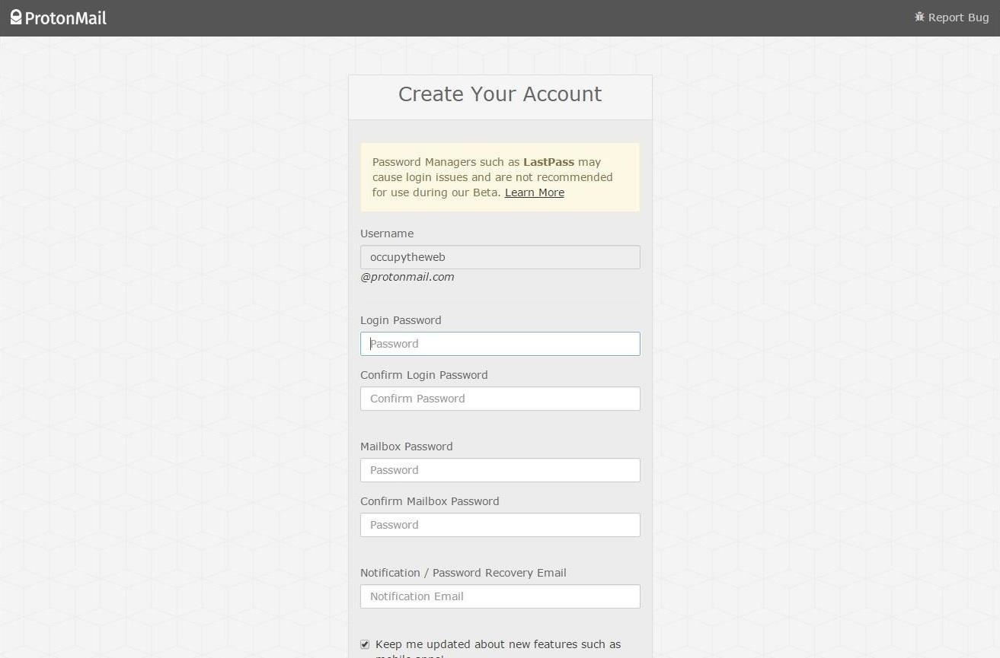
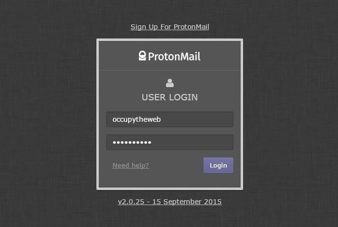
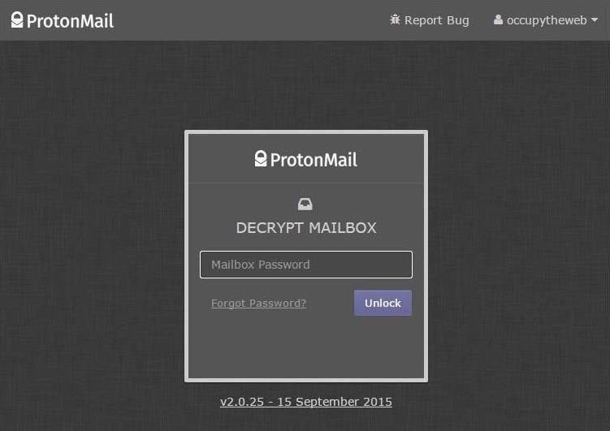
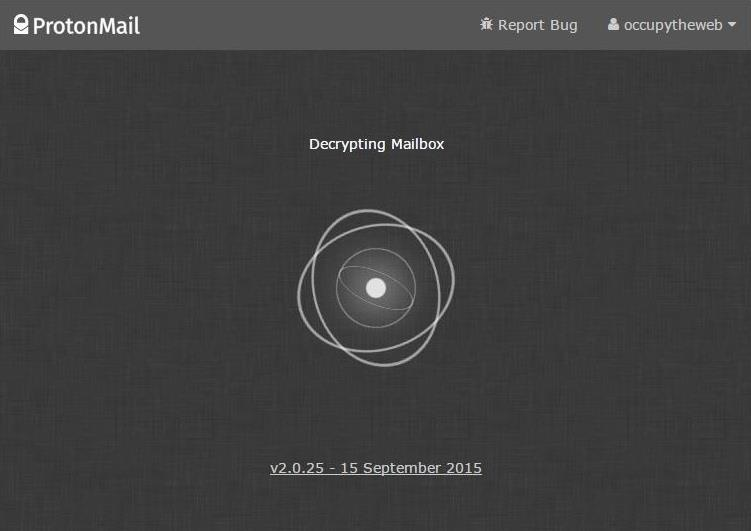
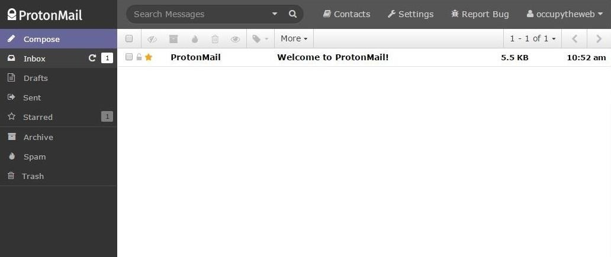
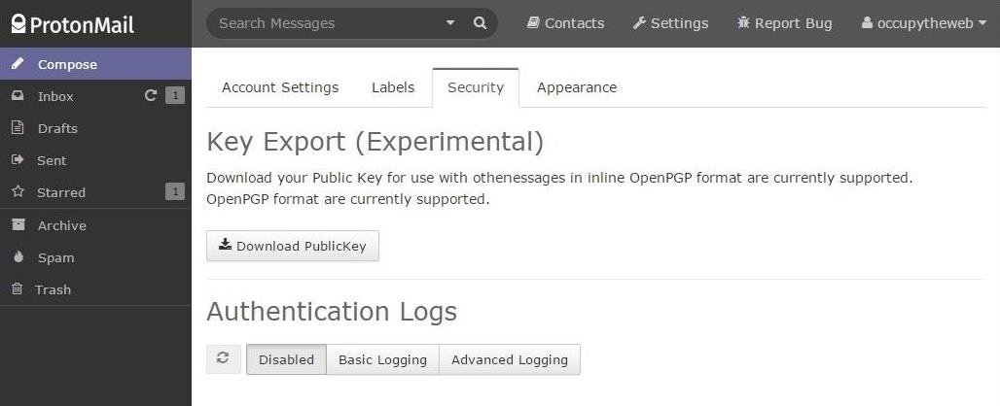
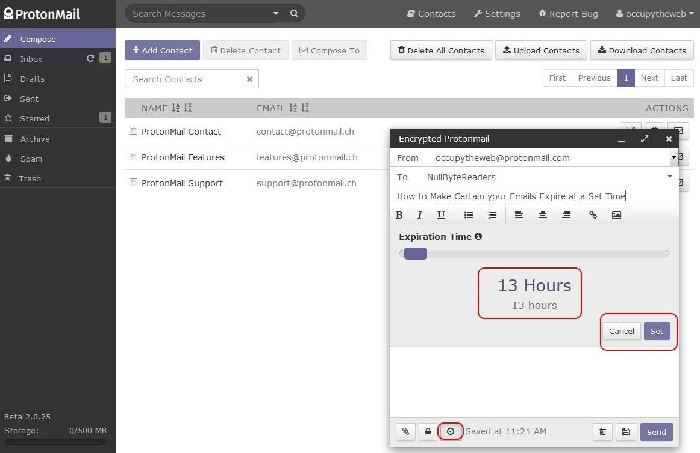

Step 1: Apply for a ProtonMail Account
The first step, of course, is to request for an account. Go to protonmail.ch and submit a request for an account.
ProtonMail
was developed in 2013, at least in part due to the
revelations that Edward Snowden provided regarding the NSA's
world-wide surveillance (WWS) program. It was developed by
researchers from CERN in Geneva, Switzerland. If you are not
familiar with CERN, it's the world's largest subatomic research
facility that many credit with
the development of the World Wide Web
, among other things.
ProtonMail
was designed to give the email user complete
anonymity. To accomplish this anonymity, it provides the
following.
The first step, of course, is to request for an account. Go to protonmail.ch and submit a request for an account.
Once you receive the email notifying you that you can now open an account, click on the link they sent you. This will take you to a "Create Your Account" screen, such as below.
Once you have created an account, you can log in like any other webmail account.
Now that you have successfully logged in with your username and password, ProtonMail will prompt you for your second password which is used to decrypt your email.
When you enter it, it begins working on decrypting your email as seen below.
When all of your email is decrypted, it will open a familiar email interface.
If you click on "Settings" in the top bar and then "Security," it brings you to the screen below. Notice that you can export your PublicKey for use in PGP-compatible services. Presently, it is only compatible with OpenPGP. Also notice in the lower half of the screen the "Authentication Logs." By default, they are "Disabled" and I recommend you keep them so for the highest level of security.
One of the features of ProtonMail that I really like is the email expiration feature. When you compose an email, you can choose how long it will exist on the server before "expiring."
To do so, simply click on the "clock" icon in the bottom of the compose email window and it will open a slider where you can choose how long the email will exist. In this case, I set the expiration to 13 hours. After you hit "Set," the clock will begin ticking, and when the time has expired, the email will expire and no longer be available to ANYONE.
